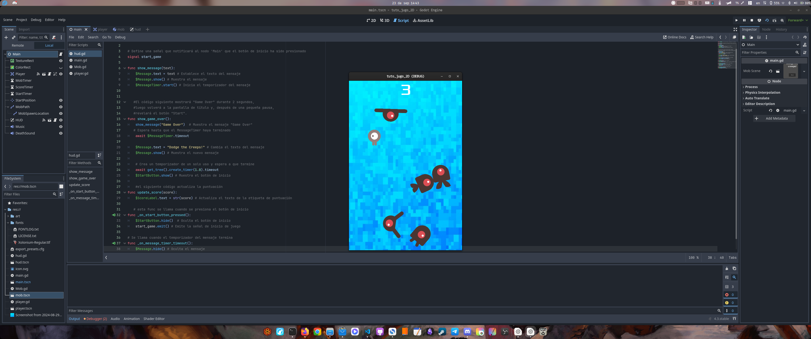

Day 26: Horizontal Movement
October 6, 2024
Finally, after weeks of frustration and moments of wanting to give up, I managed to get my character to move horizontally with a simple mouse click. I know this might seem trivial to many, but for me, it's a huge milestone in my learning journey with Godot, especially because although there are many Godot tutorials and guides online, very few address the topic of movement through a simple left mouse button click.
The goal seemed simple: make the character walk towards where the player clicks. But if there's one thing I've learned in these few weeks of game development with Godot, it's that what seems easy in theory can be a real headache in practice.
The Process
- First, I had to read and research how to generate character movements. For this, I mainly read Godot's documentation on the input event system, the 'InputEvent', but I also watched hundreds of YouTube videos that helped me understand how I could achieve this movement.
- Then came the challenge of calculating the direction of the character's movement. A problem that took me a long time to solve was how to limit the character's movement to a specific area of the scene.
- Finally, making the movement feel smooth and natural. No abrupt teleportations or robotic movements. All the sprites and backgrounds I used are free and I took them from itch.io.
After countless attempts, errors, and debugging, this is the code that finally worked, a simple code that I might improve later, but for now, I'm satisfied with the result.
extends CharacterBody2D
# player_Main.gd
# This script controls the player's behavior in the main scene
# Variables for player movement and control
var speed = 130 # Player movement speed in pixels per second
var target_x = 0 # Target X position to which the player will move
var moving = false # Indicates whether the player is moving or not
# Constants and variables for scene boundaries
const SCENE_WIDTH = 1158 # Scene width in pixels (adjust if necessary)
var left_limit: float # Left limit for player movement
var right_limit: float # Right limit for player movement
# Constant for scene change
const SCENE_CHANGE_THRESHOLD = 5 # Distance from edge to trigger scene change
# Reference to the child AnimatedSprite2D node
@onready var animated_sprite = $AnimatedSprite2D
func _ready():
setup_player_limits()
var global_state = get_node("/root/GlobalState")
if global_state.previous_scene == "scene2":
position_player_from_right()
else:
global_position.x = clamp(global_position.x, left_limit, right_limit)
global_state.set_previous_scene("main")
print("Initial player position:", global_position)
func setup_player_limits():
# Set up movement limits based on player sprite size
if animated_sprite and animated_sprite.sprite_frames:
var texture = animated_sprite.sprite_frames.get_frame_texture("Idle", 0)
if texture:
var sprite_width = texture.get_width() * animated_sprite.scale.x
left_limit = sprite_width / 2
right_limit = SCENE_WIDTH - sprite_width / 2
print("Movement limits: Left =", left_limit, ", Right =", right_limit)
else:
push_error("Could not get player sprite texture.")
else:
push_error("AnimatedSprite2D is not properly configured.")
func position_player_from_right():
# Position the player on the right edge facing left
global_position.x = right_limit
animated_sprite.flip_h = true
print("Player positioned from the right")
func _unhandled_input(event):
# Handle mouse input to move the player
if event is InputEventMouseButton and event.button_index == MOUSE_BUTTON_LEFT and event.pressed:
target_x = clamp(get_global_mouse_position().x, left_limit, right_limit)
moving = true
print("New movement target:", target_x)
func _physics_process(_delta):
if moving:
var direction = sign(target_x - global_position.x)
if abs(global_position.x - target_x) > 5:
# Move the player towards the target
velocity.x = direction * speed
animated_sprite.play("Walk")
animated_sprite.flip_h = direction < 0
else:
# The player has reached the target
velocity.x = 0
moving = false
animated_sprite.play("Idle")
check_scene_change() # Check if scene change is needed
else:
velocity.x = 0
animated_sprite.play("Idle")
# Apply movement and handle possible errors
var collision = move_and_slide()
if collision == null:
push_warning("Possible issue with move_and_slide(). Check CharacterBody2D configuration.")
# Restrict player position to scene limits
global_position.x = clamp(global_position.x, left_limit, right_limit)
print("Current player position:", global_position)
func check_scene_change():
# Check if the player is in a position that requires scene change
if global_position.x >= right_limit - SCENE_CHANGE_THRESHOLD:
change_scene("res://Scenes/scene2.tscn")
func change_scene(scene_path: String):
# Change to the specified scene
print("Changing to scene:", scene_path)
get_node("/root/GlobalState").set_previous_scene("main")
var error = get_tree().change_scene_to_file(scene_path)
if error != OK:
push_error("Could not change to scene: " + scene_path)
# IMPORTANT: I must ensure that the scene2.tscn exists and is properly configured.
# The Player node in that scene should have its own script (player_Scene2.gd) attached.
# This code can be reused for scenes 2 and 3 by making the necessary changes for consistency
This small achievement has taught me to understand the fundamentals of GDScript, and I hope to understand this language better to write more and better code in Godot. The satisfaction of seeing your code working serves as great motivation to keep going. Now I must put what I've learned into practice or I'll end up forgetting it sooner rather than later, as usually happens to me every time I learn something new but don't use it for a while. When I want to pick it up again, I have to start from scratch. I'll try to make sure that's not the case this time.
Next Steps
Now that I have the basic movement, I've realized there's a lot to do. For example, two tasks come to mind:
- Add obstacle detection so the character doesn't go through walls.
- Create an interaction system with objects in the scene.
This is just the beginning of my point-and-click adventure. I know there will be more challenges ahead, but for now, I'll take a moment to celebrate this small victory.
My First 2D Game with Godot
September 23, 2024
Today I completed my first 2D game following the tutorial from the official Godot documentation. This achievement, although it may seem small, is very significant to me as it is the first step in the beginning of this long journey towards creating this small but ambitious personal project.
Getting Familiar with Godot's Interface
Starting with Godot was an interesting experience. I could say that the interface is quite intuitive and the integrated tools facilitate the learning process. Learning to navigate the Scene Editor, adjust node properties, and manage resources was fundamental to understanding how Godot works and was perhaps the easiest and quickest part to grasp.
Introduction to GDScript
One of the most challenging aspects for someone like me with no real knowledge in the area of programming was getting to know GDScript, Godot's scripting language. Its simple syntax and direct integration with the engine make it perfect for beginners. Writing scripts to control character behavior and interactions in the game gave me an essential first contact with programming within Godot. I can't say that I would be able to create a game after doing this tutorial, I don't even think I would be able to replicate what I did when completing this 2D game, but it did give me a broader perspective on how this language works and helped me understand in general terms what could be achieved if I were to master Godot a bit better.
Challenges Encountered
Although the tutorial provided clear guidance, it was not without challenges. I encountered difficulties implementing certain functionalities, such as collision detection and input event management. However, each obstacle overcome gave me a deeper understanding of how to solve some of these problems. This official tutorial is an excellent gateway to learn a bit more about Godot.
Next Steps
The next objective in my project is to address the implementation of mouse movement within a 2D scene for a point n' click game. This challenge will allow me to create the typical interaction of this type of games, which will be very useful in creating the scenes for the project I'm currently working on.
Here you can try the final result of the 2D game "Dodge the Creeps!"
Preparing the Development Environment: Clean Installation of Fedora
September 21, 2024
Before diving into game development, the first step is preparing the desktop environment. I've chosen Fedora. This choice is based on several factors:
- It's a mainstream distribution with extensive community support, which facilitates problem-solving.
- It offers a good balance between stability and innovation.
- I have previous experience with Fedora and feel comfortable with it.
- My hardware is highly compatible with this distribution.
To start with a clean installation, I've developed two scripts that facilitate the process of backing up and reinstalling my applications. Here's the first script, which when executed generates a list of the applications installed by the user:
#!/bin/bash
# Name of the file where applications will be saved
OUTPUT_FILE="applications.txt"
# Function to get user-installed applications via DNF
get_dnf_apps() {
echo "User installed applications (DNF):" > "$OUTPUT_FILE"
dnf repoquery --userinstalled --queryformat '%{NAME}' | sort | uniq >> "$OUTPUT_FILE"
}
# Function to get Flatpak installed applications
get_flatpak_apps() {
echo -e "\nFlatpak installed applications:" >> "$OUTPUT_FILE"
flatpak list --app --columns=application | sort >> "$OUTPUT_FILE"
}
# Execute functions to get the list of applications
get_dnf_apps
get_flatpak_apps
echo "The list of user-installed applications has been saved in $OUTPUT_FILE"
After getting the list of applications, I proceed to format and perform a clean installation of Fedora. Once the system is installed and updated, I copy the file generated by the first script into my $HOME directory and run the second script to reinstall all the applications on the list:
#!/bin/bash
# Name of the file containing the list of applications
INPUT_FILE="applications.txt"
# Function to install DNF applications
install_dnf() {
echo "Installing DNF applications..."
APPS_DNF=$(sed -n '/DNF:/,/Flatpak:/p' "$INPUT_FILE" |
grep -v "DNF:" | grep -v "Flatpak:" | tr '\n' ' ')
if [ -n "$APPS_DNF" ]; then
sudo dnf install -y $APPS_DNF
else
echo "No DNF applications found to install."
fi
}
# Function to install Flatpak applications
install_flatpak() {
echo "Installing Flatpak applications..."
APPS_FLATPAK=$(sed -n '/Flatpak:/,$ p' "$INPUT_FILE" |
grep -v "Flatpak:" | tr '\n' ' ')
if [ -n "$APPS_FLATPAK" ]; then
for app in $APPS_FLATPAK; do
flatpak install -y flathub $app
done
else
echo "No Flatpak applications found to install."
fi
}
# Check if the input file exists
if [ ! -f "$INPUT_FILE" ]; then
echo "The file $INPUT_FILE does not exist. Please run the application listing script first."
exit 1
fi
# Execute the installation functions
install_dnf
install_flatpak
echo "Application installation has finished."
I hope this information is useful for those who wish to perform a similar process of reinstalling applications to get the system ready to start using it right away.
Creating a Point & Click Game
September 12, 2024

Today I'm starting a personal adventure: creating a video game. As someone with no prior experience in programming or digital art, this project represents an enormous challenge and, at the same time, the realization of a long-postponed dream.
Over the past few weeks, I've been working on the heart of the project: the story. Classic LucasArts graphic adventures have always been an inspiration, and now I'm setting out to create an interactive narrative in the purest style of classic 90s adventures, which will be filled with intriguing puzzles and memorable characters, or at least I hope so.
The tools that will help me in this adventure
As a Linux enthusiast for many years (I currently use Fedora 40), it was crucial to find cross-platform tools that would allow me to design and create the game on this operating system. After much research, I decided on the following:
- The operating system: Fedora 40.
- Trello: To organize and manage project tasks. Being a web-based tool, it works perfectly on any platform.
- Aseprite: My choice for creating characters and backgrounds in pixel art, trying to capture the essence of classic adventures. Fortunately, it has a Linux version.
- Godot: The game engine I'll use, chosen not only for its accessibility and open-source nature but also for its excellent cross-platform support, including Linux.
The choice of these cross-platform tools not only allows me to work comfortably in my Linux environment, but also facilitates the eventual distribution of the game on multiple operating systems.
For now, my main focus is on learning. I'm immersed in courses and tutorials about these tools, while continuing to develop the GDD document, the story, and the puzzles that will bring this adventure to life. I'm aware that the road will be long and challenging, but I'm determined to persevere.
This blog will be a kind of development diary, a space where I wish to capture my progress, the challenges I encounter, and the learning I achieve along the way. There is no deadline to complete this project; my goal is to enjoy the process and, with a bit of luck, turn this dream into reality.
As I'm simultaneously in constant learning about the Linux world and its distributions, I plan to publish everything I consider relevant as a self-reminder, since my poor memory is my weak point. Anyway...
Who knows? Maybe my experience will inspire others to dust off their own dreams, just as others inspired me.